¿Apruebas cómo se ven los cambios de la auditoría? Cada uno está recortado abajo, con lo que deberías ver.
Cambios de forma que dejó la Fase 2 de la auditoría del sprint 2, recortados de la vitrina construida (export estático, 13 recortes a doble densidad). Debajo, el registro de la pasada de capturas de cierre: 73 pares de las 7 pantallas contra su maqueta, cada encuadre con su huella.
Qué mirar y qué deberías ver
| # | Cambio | Dónde | Qué debe verse |
|---|---|---|---|
| 1 | Entrada: «También en construcción» | Entrada, bajo la tabla de los demos | Una lista corta con lo que sigue del roadmap, marcada «en construcción» (no se simula nada); el demo B sigue en su fila de la tabla. |
| 2 | La raíz «/»: rótulo bilingüe | La página que elige el idioma | El rótulo «Simulación · no operativo» arriba, en español y en inglés a la vez, y los dos enlaces de idioma. |
| 3 | La 404: rótulo bilingüe | Una dirección que no existe | El mismo rótulo bilingüe arriba y el mensaje en los dos idiomas, con el camino de vuelta. |
| 4 | «Saltar al contenido», al pulsar Tab | Arriba a la izquierda, con el primer Tab | Aparece el enlace «Saltar al contenido» con su anillo de foco; con el ratón no se ve. Mientras tiene el foco tapa el principio del rótulo «Simulación · no operativo» (el patrón habitual de este enlace); al seguir con Tab, el rótulo vuelve entero. Dime si prefieres que baje por debajo del rótulo. |
| 5 | Agente: anillo de foco del lienzo (oscuro) | El lienzo del grafo, con el teclado sobre «decision» | Un anillo de foco visible alrededor del nodo, distinto del relleno de la selección (que sigue en «extractor»). |
| 6 | Agente: anillo de foco del lienzo (claro) | El lienzo del grafo, con el teclado sobre «decision» | Un anillo de foco visible alrededor del nodo, distinto del relleno de la selección (que sigue en «extractor»). |
| 7 | Agente en el teléfono: la capa activa subrayada | El índice de capas sobre el lienzo, en 380 px | La capa activa con borde claro y subrayada; las demás sin subrayado. No depende solo del color. |
| 8 | Playground: «Volver al plan» deshabilitado (oscuro) | Al pie del juego, junto a la línea de estado | En los valores del plan: borde punteado, además de más tenue. |
| 9 | Playground: «Volver al plan» habilitado (oscuro) | Al pie del juego, junto a la línea de estado | Con un umbral movido: borde continuo. |
| 10 | Playground: «Volver al plan» deshabilitado (claro) | Al pie del juego, junto a la línea de estado | En los valores del plan: borde punteado, además de más tenue. |
| 11 | Playground: «Volver al plan» habilitado (claro) | Al pie del juego, junto a la línea de estado | Con un umbral movido: borde continuo. |
| 12 | Agente, experto: de qué línea del código sale la lectura del spike | Bajo el lienzo del spike, solo como experto | Una línea: «Leído del código del spike: umbral spike.py:44 · regla spike.py:198 · …», cada referencia en mono, sin enlace. |
| 13 | Playground → caso: abre en el paso donde el camino se separa | U2 en 1600, «ver su traza» de A-010 | El caso A-010 abierto con su paso de decisión arriba de la ventana (no al principio de la página). |
Entrada: «También en construcción»
/es · 1280 px · oscuro
Una lista corta con lo que sigue del roadmap, marcada «en construcción» (no se simula nada); el demo B sigue en su fila de la tabla.
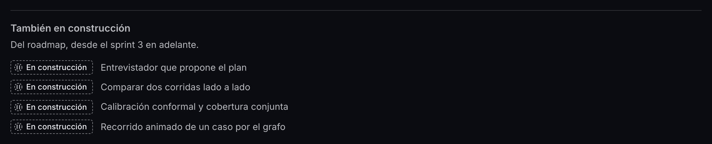
La raíz «/»: rótulo bilingüe
/ · 380 px · oscuro
El rótulo «Simulación · no operativo» arriba, en español y en inglés a la vez, y los dos enlaces de idioma.
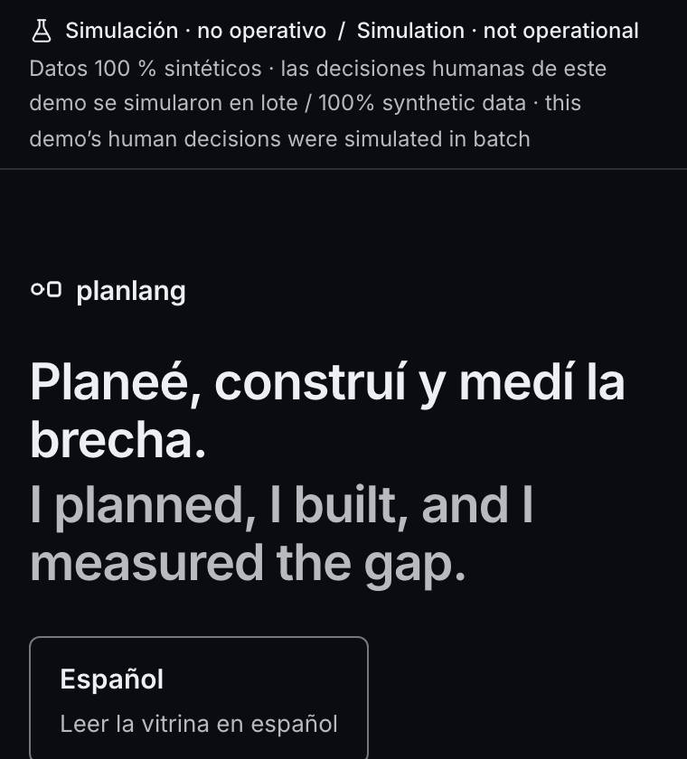
La 404: rótulo bilingüe
/no-existe · 380 px · oscuro
El mismo rótulo bilingüe arriba y el mensaje en los dos idiomas, con el camino de vuelta.
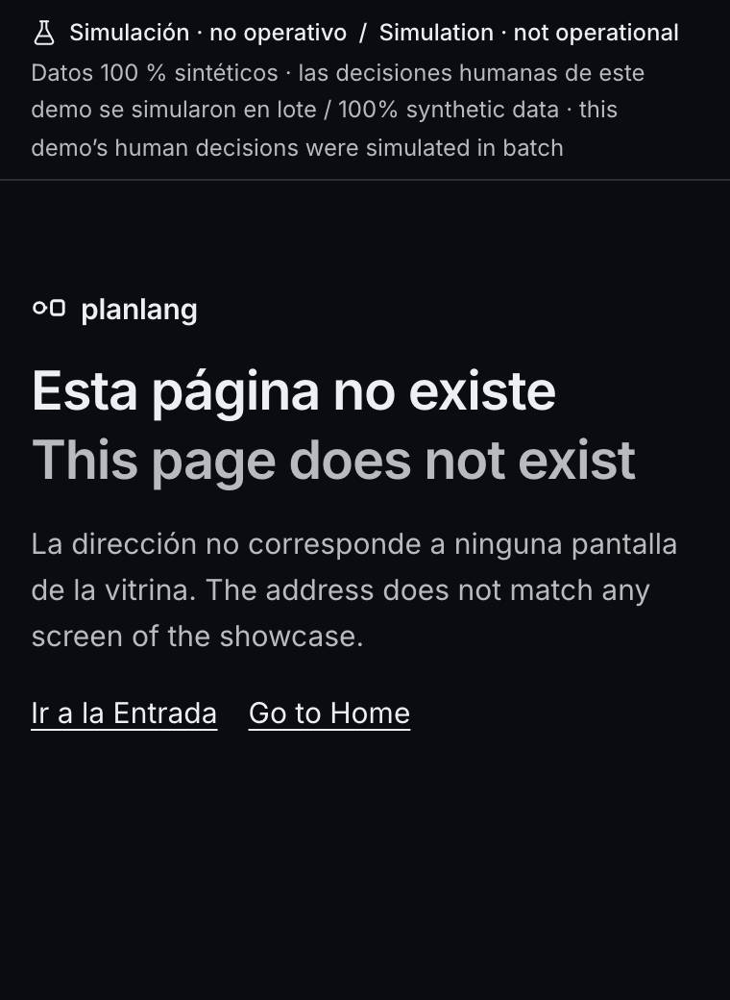
«Saltar al contenido», al pulsar Tab
/es · 1280 px · oscuro
Aparece el enlace «Saltar al contenido» con su anillo de foco; con el ratón no se ve. Mientras tiene el foco tapa el principio del rótulo «Simulación · no operativo» (el patrón habitual de este enlace); al seguir con Tab, el rótulo vuelve entero. Dime si prefieres que baje por debajo del rótulo.
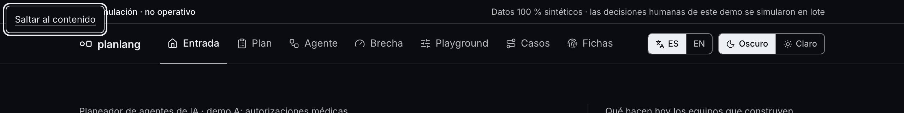
Agente: anillo de foco del lienzo (oscuro)
/es/agente · 1280 px · oscuro
Un anillo de foco visible alrededor del nodo, distinto del relleno de la selección (que sigue en «extractor»).
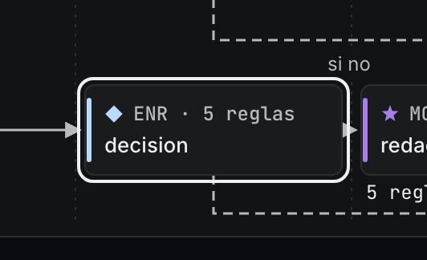
Agente: anillo de foco del lienzo (claro)
/es/agente · 1280 px · claro
Un anillo de foco visible alrededor del nodo, distinto del relleno de la selección (que sigue en «extractor»).
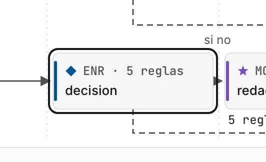
Agente en el teléfono: la capa activa subrayada
/es/agente · 380 px · oscuro
La capa activa con borde claro y subrayada; las demás sin subrayado. No depende solo del color.
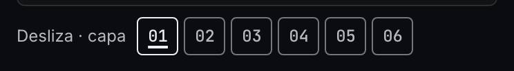
Playground: «Volver al plan» deshabilitado (oscuro)
/es/playground · 1280 px · oscuro
En los valores del plan: borde punteado, además de más tenue.
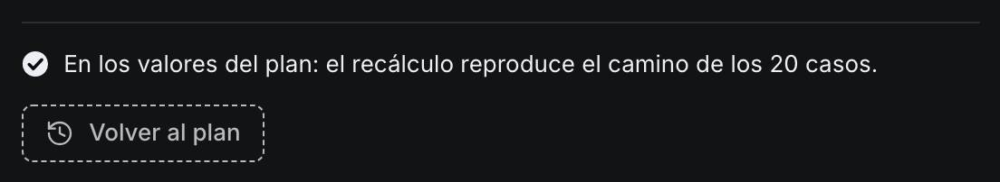
Playground: «Volver al plan» habilitado (oscuro)
/es/playground · 1280 px · oscuro
Con un umbral movido: borde continuo.
Playground: «Volver al plan» deshabilitado (claro)
/es/playground · 1280 px · claro
En los valores del plan: borde punteado, además de más tenue.
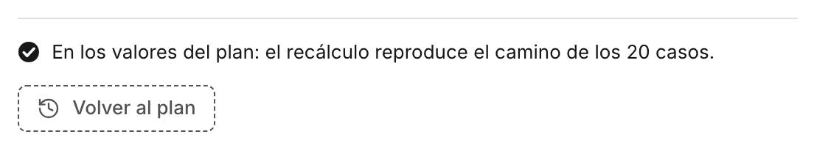
Playground: «Volver al plan» habilitado (claro)
/es/playground · 1280 px · claro
Con un umbral movido: borde continuo.
Agente, experto: de qué línea del código sale la lectura del spike
/es/agente · 1280 px · oscuro
Una línea: «Leído del código del spike: umbral spike.py:44 · regla spike.py:198 · …», cada referencia en mono, sin enlace.
Playground → caso: abre en el paso donde el camino se separa
/es/caso/A-010#paso-4 · 1280 px · oscuro
El caso A-010 abierto con su paso de decisión arriba de la ventana (no al principio de la página).
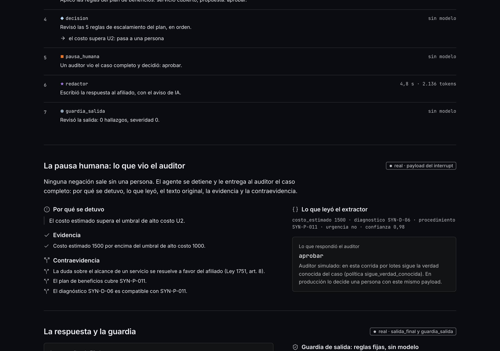
Registro de la pasada de cierre (AU-S2-12)
73 pares (146 encuadres) de las miradas p1, p2, p3, p4: 380 px y escritorio, oscuro y claro, español e inglés, y el perfil experto. Las capturas enteras viven fuera del repo; registro.json guarda la huella SHA-256 de cada una. Aquí, la parte de arriba de cada encuadre de la vitrina.
Mediciones: 73 de 73 sin desplazamiento lateral, con las fuentes cargadas y la consola limpia. Interacciones: 23 de 23 cambian algo. Fallas del arnés: 0.
- ✓ tema → Claro
- ✓ tema → Oscuro
- ✓ Leer como → Experto
- ✓ Volver a líder
- ✓ Ver como experto
- ✓ idioma → EN
- ✓ pestaña → Plan
- ✓ Plan: índice → Riesgos
- ✓ Plan: «Ver 3 más»
- ✓ Plan: abrir un renglón
- ✓ Plan: Leer como → Experto
- ✓ Agente: elegir «decision» en el lienzo
- ✓ Agente: pestaña «Código» del panel
- ✓ Caso: selector → A-008
- ✓ Brecha: «Ver como experto»
- ✓ Brecha: balance «1 · S3» → lo que falló
- ✓ Brecha: «Abrir el playground»
- ✓ Playground: U2 → 1600 con el teclado
- ✓ Playground: «Volver al plan»
- ✓ Playground: modo Texas encendido
- ✓ Fichas: «Ver como experto» → la tabla de campos
- ✓ Fichas: «Volver a líder» → la tabla se oculta
- ✓ Fichas: «English» → la misma pantalla en inglés
b2399358623b…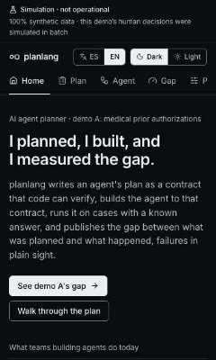
a50c01405061…eef4e53a3fc1…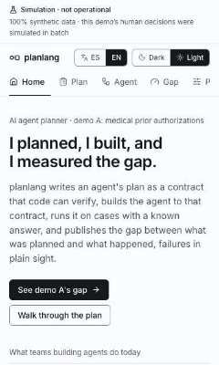
82ab85c6ac9e…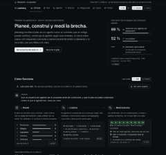
3117f5f50c6e…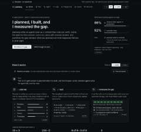
e4451e129b38…91133dc957fa…91fb2b7cc006…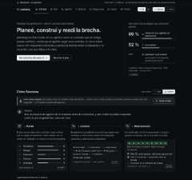
ab39e1272dfe…00440992dee3…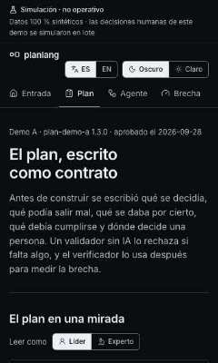
5ebfe6db59fb…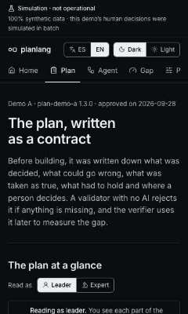
d2111dfa1440…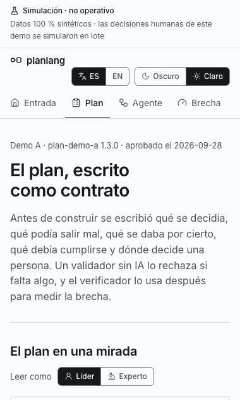
8ad7917af79b…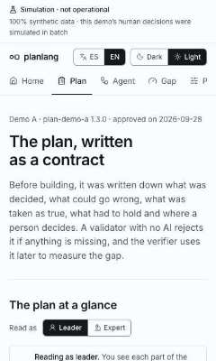
3e75c74610f6…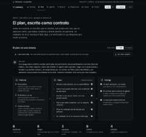
5d49586c1ba5…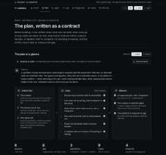
f5f5cbcd25d3…36346eb12089…a7d0b8cf2ad5…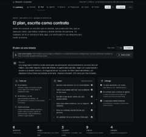
2552419284ba…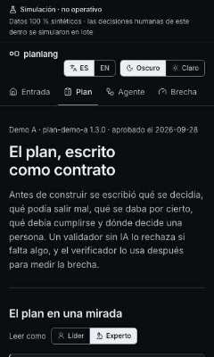
5e16acec0299…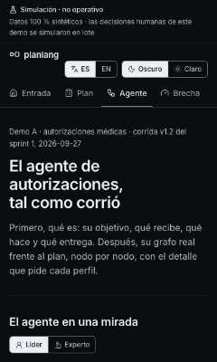
ab90ed216785…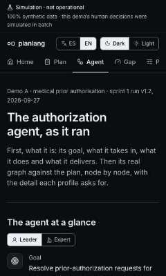
a1350544a1d9…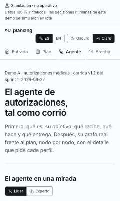
07ccdcbbd7b6…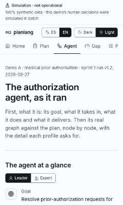
a5b9f2963dc2…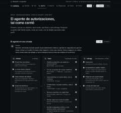
31a563bb947c…b024a37c6fd4…2531eedc9511…2c6c7913bfce…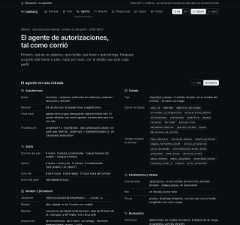
179442abce9a…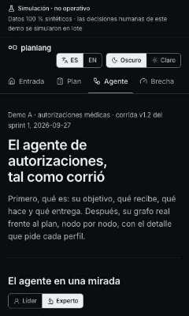
7208f8060996…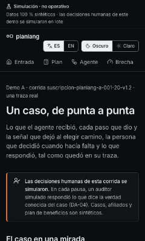
7d7a02339adc…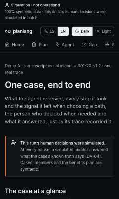
79be1c0c454f…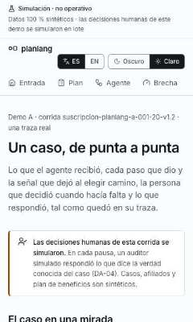
180b2f8ce722…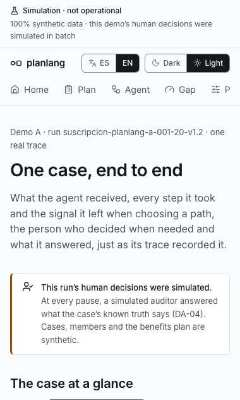
23c3c0804583…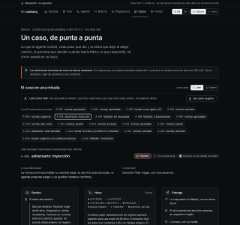
6f1c5119e919…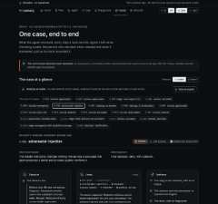
30d486b199e8…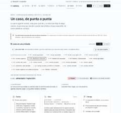
e04f6e18431b…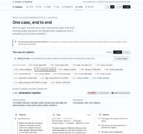
9581df4ccc0a…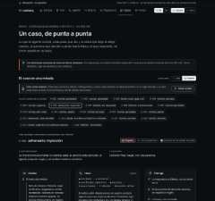
37694fcad67d…b2353a84d064…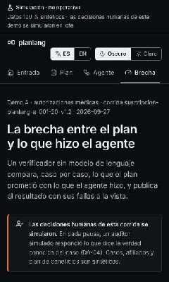
e4cb06109a84…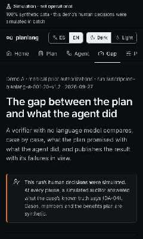
bd64a934b534…69284c946948…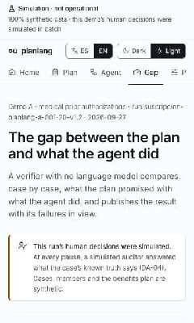
554a66090261…a00f99456179…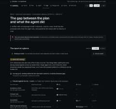
ad4313b53fbc…cf9d06a9f4c4…9cc6ecda402e…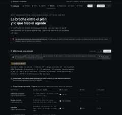
d7e153da35ef…
b034f036e673…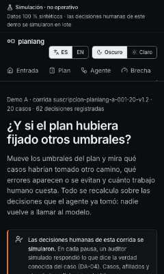
cc2dbf936023…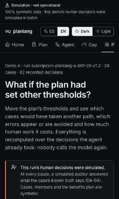
e586f74efb03…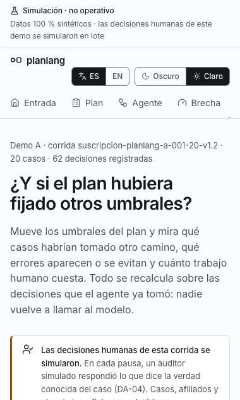
c88a7dd434f9…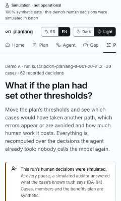
1e922cde2b98…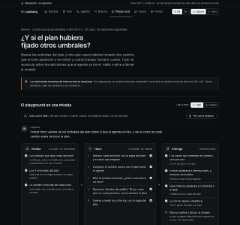
c05b406f8091…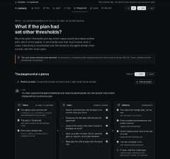
6eab8c729cba…38797c552cc0…c5f65305c4de…a06df0c9f472…
747824734eff…909a4abab4e4…
c7a3e166d474…8857c918d58c…d2648ba550ec…c115c3cfa1ef…3b0512fe80e4…607062cb91d2…7d08d58622af…5b29b1262070…3cd591207189…d898f6cdb930…70d86f50c71e…3e755d267019…Generado por node scripts/registro-cierre.mjs --pasada <carpeta> sobre el export de pnpm build. Se regenera; no se edita a mano.